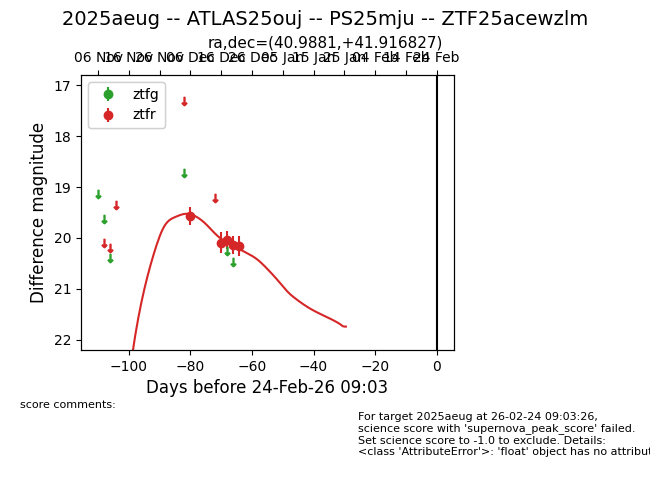
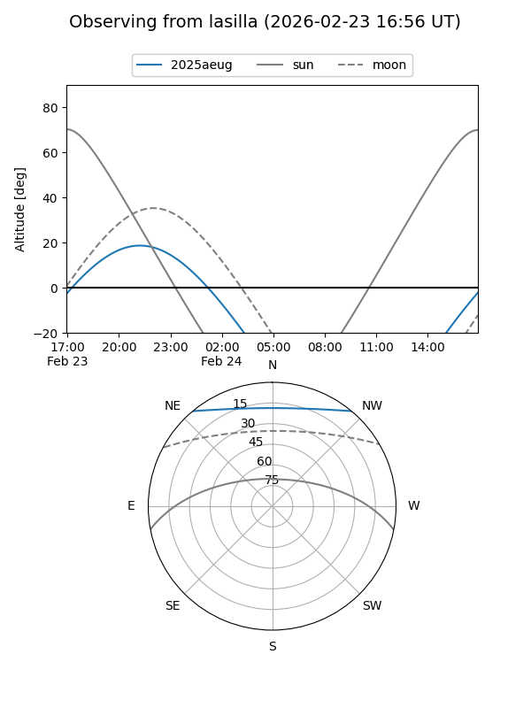
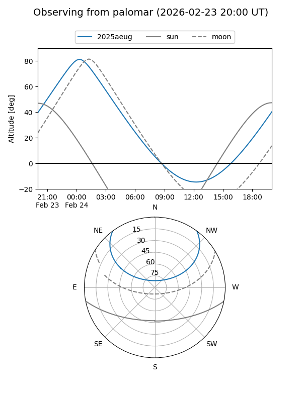
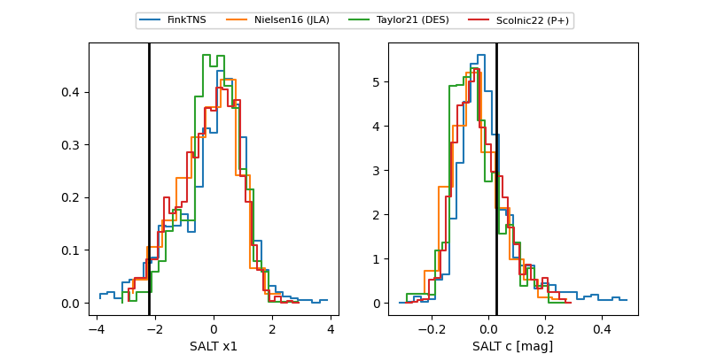

2025aeug
Target 2025aeug at 2025-12-22 15:31
Aliases and brokers:
FINK: fink-portal.org/ZTF25acewzlm
Lasair: lasair-ztf.lsst.ac.uk/objects/ZTF25acewzlm
ALeRCE: alerce.online/object/ZTF25acewzlm
TNS: wis-tns.org/object/2025aeug
YSE: ziggy.ucolick.org/yse/transient_detail/2025aeug
alt names
ZTF25acewzlm (ztf,fink_ztf)
2025aeug (tns,yse)
ATLAS25ouj (atlas)
Coordinates:
equatorial (ra, dec) = 40.9881,+41.91683
equatorial (HMS+DMS) = 02:43:57.14,+41:55:00.58
galactic (l, b) = (144.3621,-16.22533)
Flags:
Photometry:
last ztfr=20.16
5 ztfr detections
Lightcurve

Visibility


Additional plots
